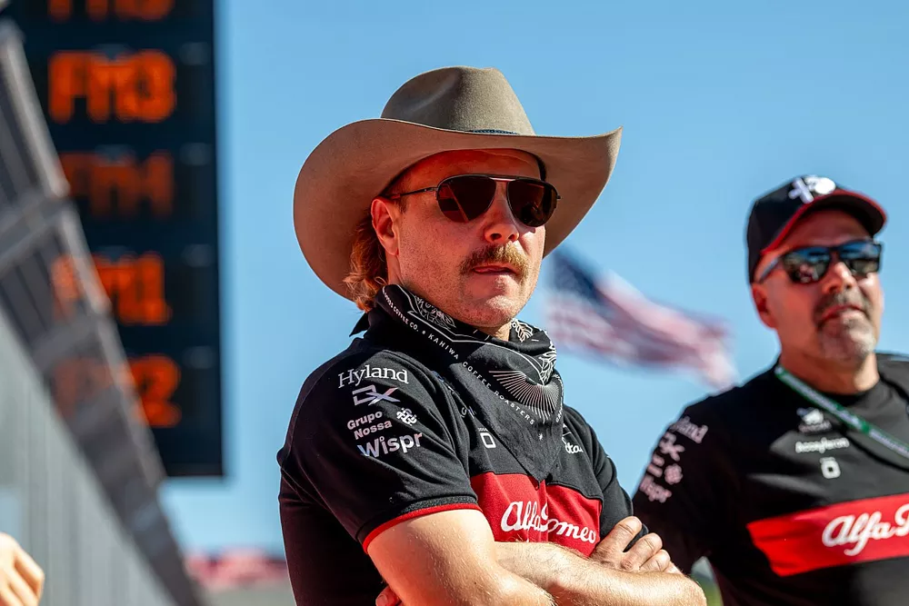

Valtteri Bottas, FIA'nın Amerika Birleşik Devletleri Grand Prix'sinin ardından tüm F1 araçlarının taban altındaki tahta plakalarında aşınma testleri yapması gerektiğini düşünüyor.
Mercedes pilotu Lewis Hamilton ve Ferrari pilotu Charles Leclerc araçlarının altındaki kalasın yasal sınırın altında aşındığının tespit edilmesinin ardından diskalifiye edildi.
COTA pistinin engebeli yüzeyi ve Cuma günkü grand prix sıralama seansından sonra tüm araçların kapalı parkta kilitli kalması, Hamilton'ın ikinciliği ve Leclerc'in altıncılığı kaybetmesinde rol oynadı.
Özellikle Mercedes, COTA'nın tümsekler göz önüne alındığında hafifletici bir durum sunduğunu düşünse de, FIA'nın teknik düzenlemeleri ve bir otomobilin kurallara uyup uymadığı söz konusu olduğunda gri alanlar bulunmuyor.
Bununla birlikte, tahta plaka aşınma testi, bir otomobilin diğer birçok alanında ve çoğunluğunda olduğu gibi, öncelikle zaman kısıtlamaları nedeniyle, tüm araçlarda değil, yarış sonrası sadece dört otomobil üzerinde gerçekleştirildi.
Austin'deki yarışın ardından ortaya çıkan anormallik, dört otomobilden ikisi olmak üzere yüzde 50'sinin kural dışı olduğunun tespit edilmesi oldu.
Bottas, Alfa Romeo'nun "tahta aşınmasıyla ilgili endişeler" nedeniyle araçlarını normalden daha yüksekte çalıştırmak zorunda kaldığını doğruladı.
Bu da aracın ayarını tehlikeye attı ve Bottas ve Zhou'yu, önlerindeki iki araç yarış dışı bırakıldıktan sonra bile son klasmanda 12. ve 13. sırada bıraktı.
Bu hafta sonu Meksika Grand Prix'si öncesinde medyaya konuşan Bottas, "Diğer bazı takımlar da (tahta ile ilgili) sorunlar yaşadı."
"Aracı yeterince alçaktan süremedik ve pist böyleyken, eski asfalt bölümlerde mekanik tutunma bu kadar düşükken, yükünüz yoksa ve (motor) gücünüz çok yüksekse, daha da fazla kaybedersiniz."
"Tümsekler nedeniyle ayarlardan oldukça ödün verdiğimi hissediyorum. Daha alçak sürüşe sahip olabilirdik ancak o zaman muhtemelen yasa dışı olurduk." dedi.
"Elbette, bazı takımlar sürüş yüksekliği ve sertlik konusunda daha fazla kumar oynadı; bazıları daha muhafazakârdı, belki biz de öyleydik."
"Yani böyle bir pistte, böyle koşullarda, muhtemelen evet, ama zaman açısından mümkün mü bilmiyorum."
Bottas, Alfa Romeo'nun araçlarındaki tahta plakalara dikkat ettiği için etkili bir şekilde 'cezalandırıldığı'nı düşünüyor: "Evet, diğerleri de cezalandırıldı ama belki bazıları cezalandırılmadı. Sonuçta en azından onlar (Hamilton ve Leclerc) cezalandırıldı."